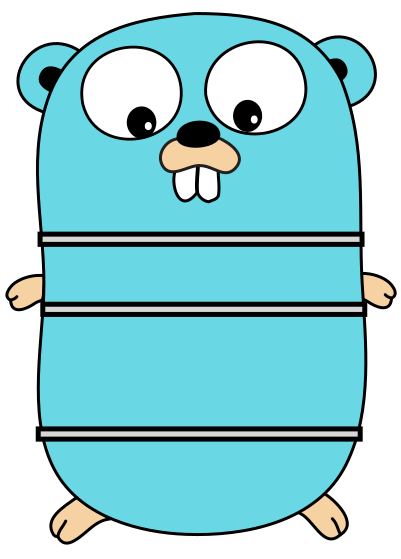

bench results of play with sql and golang
status
islatest
lateststatus
docker swarm 1.17.05 - local macbook pro
kubernetes 1.6.4 - gcp 4x n1-standard-1 - 1 vCPU, 3.75GB
throughput (transactions/s) - higher is better
min time for each transaction (ns) - lower is better
max time for each transaction (ns) - lower is better
median time for each transaction (ns) - lower is better
standard deviation time for each transaction (ns) - lower is better
number of errors - lower is better